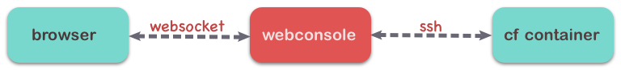
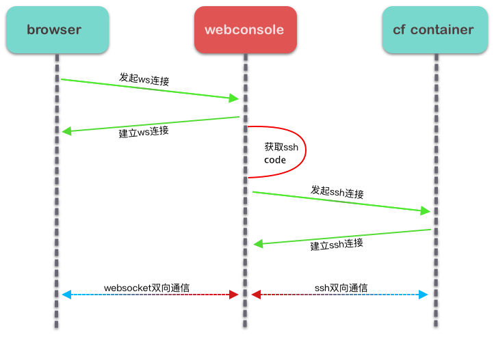

1. 调研
前端：了解到有一个非常优秀的开源web终端库： xterm.js , 使用起来也比较简单。
后端：使用 go 语言实现，因为 go 语言拥有许多优秀的开源ssh库，能够满足我们的需求。
难点：
1. 如何与 cf(cloud foundry) 进行交互得到 `ssh code` ？
2. 如何把 ssh 命令行转换成 websocket 通讯, 并输出到 xterm.js 中？
3. 如何控制访问权限？
2. 原理

1. 浏览器向服务器发起 websocket 请求
2. 服务器通过 ssh 连接到 cf 容器
3. 连接建立，服务器负责转发消息
在后端和浏览器之间建立websocket连接后，将用户在浏览器中输入的命令通过 websocket 协议发送到后端，后端使用 ssh 协议将命令输入到容器ssh进程的 stdin，命令执行后，再从 stdout 中读取输出，通过websocket协议返回浏览器显示给用户，达到交互的目的。
3. 问题解决以及服务端实现
在前两个步骤中，我已经通过分析把原理和难点梳理清楚了，目前就需要着手解决这些问题。
3.1 如何获取 ssh code
cf 有一个自带的命令 cf ssh-code 能够获取连接到容器用的 ssh code，但是我并没有在 cf 开源的 go 语言客户端 cfclient 中发现相关的 API，所以我去查看了 cf cli 的源码，并在里面发现了 cc 暴露出来的接口，有了这个接口之后，就能够通过 http 请求的方式获取 ssh-code。由于 cfclient 中并没有相关的代码，所以不得不自己实现一些方来获取 ssh-code, 于是这个问题解决了。
3.2 如何将 websocket 和 ssh 这两个协议的消息进行转换
连接建立：

func WS(c *gin.Context) {
// 初始化websocket连接
upgrader := websocket.Upgrader{
ReadBufferSize: 1024,
WriteBufferSize: 1024,
}
ws, err := upgrader.Upgrade(c.Writer, c.Request, nil)
defer ws.Close()
// 初始化ssh连接
cl, _ := c.Get("claims")
s, _ := c.Get("session")
claims := cl.(*utils.Claims)
session := s.(*utils.Session)
sshShell := utils.SSHShellSession{
Node: utils.Node{
Host: claims.Host,
Port: claims.Port,
},
}
var wsBuff WebSocketBufferWriter
sshShell.StdoutPipe = &wsBuff
err = sshConn.Connect(username, password)
defer sshConn.Close()
defer wsBuff.Flush(websocket.TextMessage, ws)
......
......
}
连接保持：
func WS(c *gin.Context) {
......
......
done := make(chan bool, 3)
setDone := func() { done <- true }
// 数据转换：websocket ----> SSH
writeMessageToSSHServer := func(wc io.WriteCloser) {
defer setDone()
for {
// 从websocket读取数据
msgType, p, err := ws.ReadMessage()
if err = DispatchMessage(sshShell.Session, msgType, p, wc); err != nil {
log.Println("Error: error write data to ssh server:", err)
return
}
}
}
stopper := make(chan bool)
// 数据转换：SSH ----> websocket
writeBufferToWebSocket := func() {
defer setDone()
tick := time.NewTicker(time.Millisecond * time.Duration(utils.Config.SSH.BufferCheckerCycleTime))
defer tick.Stop()
for {
select {
case <-tick.C:
if err := wsBuff.Flush(websocket.TextMessage, ws); err != nil {
log.Println("Error: error sending data via webSocket:", err)
return
}
case <-stopper:
return
}
}
}
go writeMessageToSSHServer(sshShell.StdinPipe)
go writeBufferToWebSocket()
go func() {
defer setDone()
if err := sshShell.Session.Wait(); err != nil{
log.Println("ssh exist from server", err)
}
}()
<-done
stopper <- true
log.Println("Info: websocket finished!")
}
控制访问权限：
利用 cf 自带的权限认证机制实现。